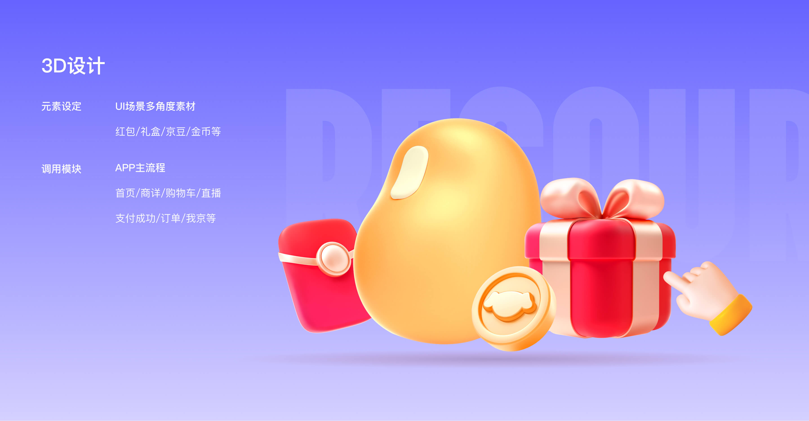
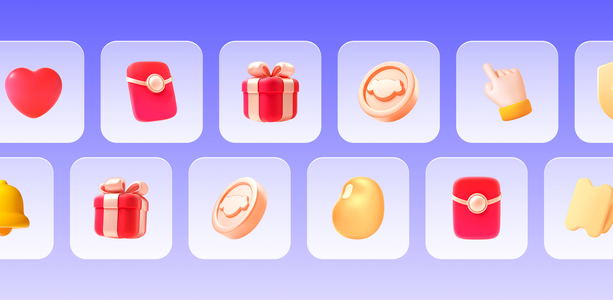
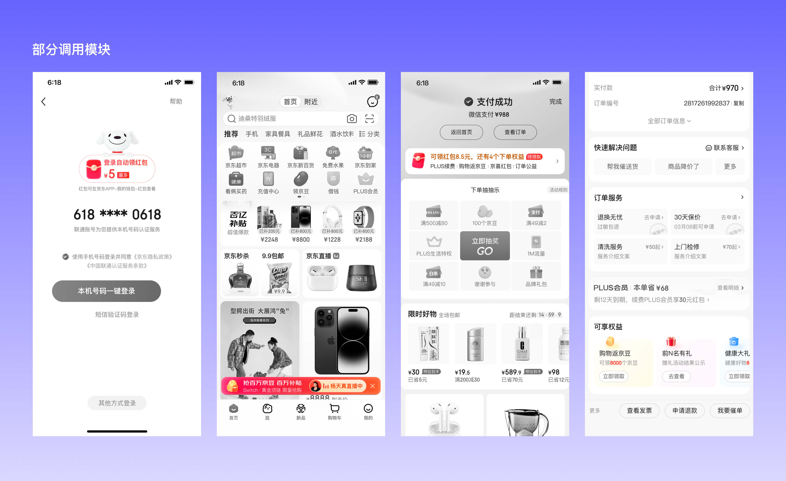

3D素材库
NO.1
项目概览
名称：3D素材库
时间周期：2023-2024
项目类型：主站组件库搭建
我的角色：主3D视觉设计师，本次项目将 APP 中常用的 icon 和配图素材统一 3D 化，强化视觉品质，方便各模块调用。

NO.2
问题与目标
核心问题：在京东 App 主流程中，红包、京豆、优惠券、礼盒等营销元素被大量使用，但由于各模块长期由不同设计师分别绘制，线上素材存在风格不统一的问题：有些偏插画，有些偏简约 icon，有些偏写实。
设计目标：项目目标是对高频营销元素进行系统盘点和统一重绘，建立一套质感更强、风格一致、可复用的 3D 组件素材库，降低各业务模块重复绘制成本，同时提升整站营销资源的视觉品质和统一感。
NO.3
我负责的内容
素材盘点：梳理主流程中高频使用的营销元素，包括红包、京豆、优惠券、礼盒等，明确组件库需要覆盖的基础资产范围。
风格定义：确定统一的 3D 视觉语言，包括材质质感、体积感、光影方式和整体精致度。
3D资产制作：使用 C4D 完成核心营销元素的建模、材质、灯光和渲染，输出可供不同模块直接调用的统一素材。
组件化沉淀：将素材整理为可复用的组件资源，方便首页、搜索、商详、我的京东等业务设计师在不同场景中调用。
跨团队协作：根据不同模块的使用需求，对素材进行适配和补充，保证组件在多场景下保持统一且可落地。

NO.4
结果与复盘
3D 组件库上线后，被应用在首页、搜索、商品详情、我的京东等多个核心模块中，替代了过去各模块自行绘制、风格不一的营销素材。
项目有效提升了京东 App 主流程中营销元素的视觉一致性和质感，也降低了设计师重复绘制基础素材的成本。后续部分外部协作团队，如直播相关设计团队，也开始调用这套素材，说明组件库具备较好的复用价值和扩展性。
